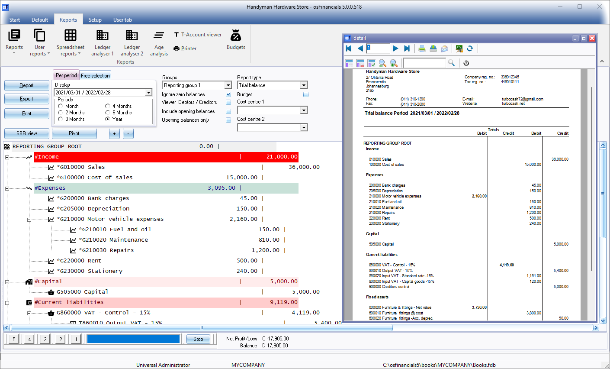

Reports ribbon
The Reports ribbon is used to access all Reports, User reports, Spreadsheet reports and reports in the Ledger analyser 1 / Ledger analyser 2 and T-Accounts can be accessed and printed and even exported and opened in a Spreadsheet. It is also used to process and analyse Budgets access to the Printer setup.

|
|
Buttons 5, 4, 3, 2 and 1 at the bottom of the report - is shortcut keys to the last accessed T-Account viewer options or Pivot options. These shortcuts will be cleared when you close active forms, or when you open the Set of Books. |

In addition to the Printer and Budgets options, the reports is grouped into the seven (7) options:
- Reports - List the reports in the following groups:
- Ledger - You may print the Budget vs actual (3 periods) report, List the General ledger accounts (Chart of accounts) and Transaction reports.
- Debtors - You may print various age analysis reports, various listing reports, address labels, transaction reports and debtor statements.
- Creditors - You may print various age analysis reports, various listing reports, address labels, transaction reports and creditor remittance advises.
- Stock - Reorder reports, listing reports, stock movements, backorder reports. You may also print labels (barcodes).
- Contacts - Lists the details of all your contacts.
- Calendar - Print the appointments (events) (i.e. Appointment, Debtor appointment, Creditor appointment and Hours) that was scheduled in the Calendar / Planner.
- Batch entry - Print the transactions of posted invoices, credit notes purchase and supplier return documents as well as posted batch transactions (i.e. sales journal, purchase journal, payments journals, receipts journals, general journals, etc.).
- Documents - Lists your documents, such as invoices, credit notes, purchases, supplier returns documents, orders and quotes or a selection of documents or for a selected period.
- Tax - If you are registered as a Tax (VAT/GST/Sales tax) vendor, you need to print and view reports for a specific period for all your Tax (VAT/GST/Sales tax) or for a specific tax code such as Input Tax (VAT/GST/Sales tax), Output Tax (VAT/GST/Sales tax), Zero-rated Tax (VAT/GST/Sales tax), etc.
- Sales - Various reports are available to analyse your sales documents. Print Graphs, Debtors, Sales and Items reports for Invoices, Credit notes and Quotes.
- Sales analysis - You may print reports for five (5) reporting groups (i.e. Debtor group 1, Debtor group 2, Document group 1, Document group 2 and Salespersons) for each sales documents (i.e. quotes, invoices and credit notes). You may also print sales per product for stock group 1 or stock group 2 reports for sales documents.
- Purchases - Various reports are available to analyse your purchase documents. Print Graphs, Creditors, Purchases and Items reports for Purchase and Supplier return documents as well as Orders.
- Purchase analysis - You may print reports for five (5) reporting groups (i.e. Creditor group 1, Creditor group 2, Document group 1, Document group 2 and Salespersons) for each purchase documents (i.e. orders, purchases and supplier returns). You may also print purchases per product for stock group 1 or stock group 2 reports for purchase documents.
- Company info - You may print the details of the bank accounts or the company information, messages and cost of sales settings.
- Currencies - If you process Multi-currency documents (i.e. Invoices, Credit notes and Quotes for debtors (customers / clients) or Purchases, Supplier returns and Orders for creditors (suppliers / vendors). you may print a list of the "Currencies" (added / edited in the Setup → Currencies menu on the Setup ribbon.
- Plugins - Price agreement report for the Price agreement plugin.
- Point-of-sale - Sales and Receipt reports for the plugin point-of-sale systems (if you purchased and use the HorecaPOS or RetailPOS point-of-sale systems).
- User reports - Any other reports that are under construction. Users may add their own reports in the ...\plug_ins\reports\userreports folder.
|
|
You may use Report designer on the Setup ribbon to create, add or edit document layout files and reports. You may add your own reports to be accessible from the User reports menu.
|

- Spreadsheet reports - The following reports will be opened in the powerful spreadsheet feature in osFinancials5:
- Creditors - The Creditors → Listing - List postal addresses report will be imported into the spreadsheet.
- Debtors - The Debtors → Listing - List postal addresses report will be imported into the spreadsheet.
- Transactions per period - List the transactions in posted batches and documents (i.e. sales documents (Invoices and Credit notes) and Purchase documents (Purchases and Supplier returns)) for a selected period in a spreadsheet.
- General ledger - Budget
- General ledger (Transaction totals)
- Sales analysis
- Ledger analyser 1 - Trial balance, Income statement, Balance sheet, Standard column balances (column view of the Trial balance, Income statement and Balance sheet in one report), Budget vs actual, This year vs last year as well as Column balances.
|
|
Export button for all Report types on Ledger analyser 1 / Ledger analyser 2 - You may save the export file as Text files (*.txt) (default file type); or as CSV files (*.csv) (Comma Separated Values) file type. This will automatically open (launch) the exported file in the program associated with the selected file type:
|

- Ledger analyser 2 - The same reports are available as for the Ledger analyser 1, but it gives you another option to generate. print or export different views and reports.
- Age analysis - View and choose options for the Age analysis report on screen and print it on the Reports ribbon and on the Open item link - Due tab (Default ribbon).
- T-Account viewer - Analyse, print and export transactions for specific accounts, etc. You may also export the transactions in the T-Account viewer to spreadsheets.
|
|
Column balances - Report types on Ledger analyser 1 / Ledger analyser 2 - The column balances report types will list the transactions of a selected account for each period of Last year and This year in a spreadsheet format. You may select an account and double-click on any period. This will launch the T-Account viewer with a list of all the transactions for the selected period. You may be print and/or export the transactions. The following six (6) column balances report types is available:
|
- Printer - Setup and configure the printers on your system.
- Budgets - You may process your budget figures, copy "Budget figures from the previous year" or from "Actual figures from the previous year". You may view, filter and analyse the budget figures in the Pivot feature.
|
|
This is in addition to the standard option to process budgets in Setup → Accounts (Setup ribbon). |